회의론자가 에이전트로 넘어간 순간
진행자 Nate Herk는 Matt Pocock이 독학으로 코딩을 배웠다는 데서 이야기를 시작해요. Matt는 코딩을 배우는 게 사람들이 생각하는 것보다 훨씬 쉽다고 봐요. 아마추어로 시작해 직업 개발자로 일한 기간까지 합쳐 약 10년을 손으로 코드를 썼어요.
AI(Artificial Intelligence)에는 오래 회의적이었어요. 다들 들떠 있고 장점도 보였지만 본인에게는 와닿지 않는 1년이 있었대요. 문턱을 넘은 건 2025년 12월이에요. Opus 4.5가 나오고 그 위에 OpenClaw 같은 도구가 만들어지던 때, '이제 코드를 직접 한 줄도 쓰지 않겠다'고 마음먹었어요.
그가 원래 일에서 가장 좋아한 부분은 동료를 더 낫게 만드는 일이었어요. 동료가 더 빨리 내보낼 수 있게 도구를 만들고, 때로는 자기보다 선배인 개발자에게도 일하는 법을 가르쳤어요. 동료가 일하는 '환경'에 늘 관심이 있었던 거예요. 에이전트가 쓸 만해지자 그 기술을 에이전트를 위한 환경 만들기에 그대로 쓸 수 있었대요.
에이전트에게 무엇을 신경 쓰는지 알려 주기
비개발자는 소프트웨어 공학의 원칙을 어떻게 써야 하느냐는 질문에, Matt는 한 문장으로 답해요.
The best way to get the best work out of agents is to tell them what you care about.
에이전트에게서 최고의 결과를 얻는 방법은 내가 무엇을 신경 쓰는지 알려 주는 거예요.
— 영상 04:27
사람들은 사람과 에이전트 사이의 소통 장벽을 얕잡아 봐요. 모델이 얼마나 똑똑하든 이 간극은 늘 있어요. 에이전트는 내가 정확히 무엇을 원하는지, 무엇을 중요하게 여기는지 몰라요. 그래서 매번 다시 알려 줘야 해요.
바닥을 올리는 환경
두 번째는 에이전트가 일하는 환경이에요. 아무도 신경 쓰지 않고 결과만 챙긴 바이브 코딩 코드베이스라면, 쓰레기가 들어가 쓰레기가 나와요. Matt는 개발자 100명을 거느린 조직을 상상해 보라고 해요. 가장 못하는 개발자도 더 잘하게 만들려면 어떤 장치를 둘까요?
답은 좋은 테스트, 코드베이스가 시간이 갈수록 나아지게 하는 검사, 버그를 종류째 막는 장치예요. 사람들은 이걸 20년 넘게 고민했고 책으로도 많이 남겼어요. Matt는 그 책들이 지난주에 쓴 것처럼 느껴질 만큼 지금 상황에 딱 맞는다고 해요. 첫걸음은 이걸 신경 쓰고 배우려는 마음이에요. 좋은 질문을 하면 에이전트도 그 방향으로 나를 이끌어 줘요.
에이전트가 가르쳐 준 건 믿어도 될까요?
진행자는 지난 1년 동안 배운 것의 80%를 에이전트에게서 배웠다고 해요. Matt의 답은 '믿으면 안 된다'예요. 그는 원래 회의론자라 1차 출처를 읽기 전에는 믿지 않아요. 아래 카드는 편집자가 이 대목에 붙인 할루시네이션 설명이에요.
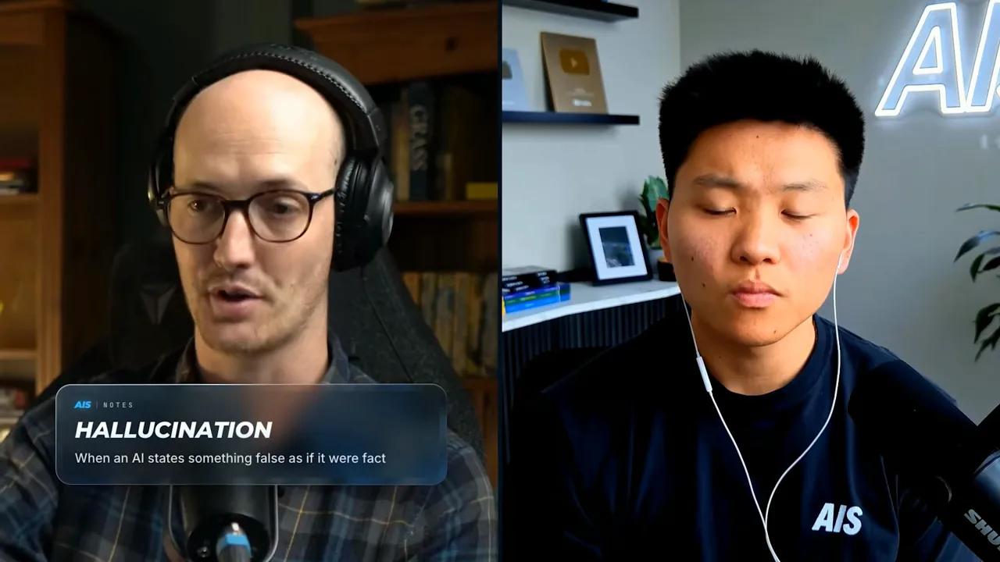
그래서 그가 만든 에이전트 스킬 중 하나인 teach는 믿을 만한 1차 출처를 찾아와 인용과 출처 링크를 달아 풀어 줘요. Matt는 이걸 주제를 처음 소개받는 데 써요. 그다음 1차 출처를 직접 읽어요. 필요한 정보는 원문에 있고, teach는 그 원문을 읽을 언어를 미리 갖추게 해 줄 뿐이래요.
기회는 지식 노동의 프로세스에 있어요
AI를 배우는 사람에게 어떤 기회가 있느냐는 질문이에요. Matt는 큰 변화의 시기에는 늘 기회가 있다고 해요. 모두가 같은 속도로 받아들이지 않기 때문이에요. 그는 특히 가르치는 일에서 기회를 많이 봐요. 그가 만나는 조직마다 AI 도입에 저항을 겪고 있대요.
AI의 어두운 면도 인정해요. Anthropic이 소설을 무단으로 학습에 쓰고 나중에 배상한 일은 이상하고, 에너지 부담도 클 거라고 해요. 그래도 경제적 유인이 있으니 AI는 사라지지 않는다고 봐요.
에이전트에도 배움의 곡선이 있어요
진행자는 예를 들어요. 직장에 다니는 비개발자 영업 사원이 컨설팅 사업을 차릴지, 회사 안에서 AI로 승진을 노릴지 묻는 거예요. Matt는 길을 고르기보다 어느 쪽에서든 쓸모 있을 기술을 보라고 해요. 사람들은 에이전트에게 말만 걸면 결과가 나오니 배울 게 없다고 생각해요. 모델이 좋아져도 곡선은 그대로이고 잘 안 보일 뿐이래요.
- 에이전트가 낸 결과에서 무엇을 믿을 수 있나요?
- 에이전트 여럿을 어떻게 조직하나요?
- 에이전트가 받는 정보를 어떻게 통제하고, 어떤 형식과 구조로 설계하나요?
- 내 업무 프로세스를 에이전트가 따를 수 있는 형태로 어떻게 바꾸나요?
검증이 어려운 곳에 기회가 있어요
에이전트가 코드를 잘 쓰는 이유는 코드가 검증하기 쉬워서예요. 수학 문제를 잘 푸는 것도 증명으로 확인할 수 있어서예요. 현실의 업무는 검증이 훨씬 어려워요. Matt도 자기 일상 업무에 에이전트를 붙이느라 셀 수 없이 많은 프로세스를 시도했고, 지금도 조금씩 다듬고 있어요.
그래서 그가 본 가장 큰 기회는 에이전트로 지식 노동의 프로세스를 만들어 조직에 가져가는 일이에요. 아래 그래픽처럼 법률 사무소, 에이전시, 병원, SaaS, 소매, 금융은 모두 일하는 순서가 조금씩 달라요. 칸마다 강조된 단계의 위치가 다른 게 그 뜻이에요.
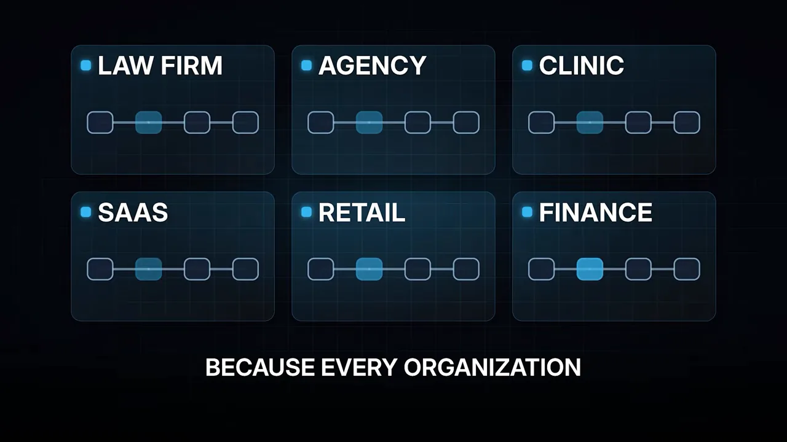
1년 반 가까이 에이전트를 만져 온 Matt도 이 일이 여전히 어렵다고 해요. 어렵기 때문에 기회가 크다는 거예요.
모르는 줄도 모르는 것, 그리고 grill-me
진행자는 기술이 부족한 사람이 의도만으로 에이전트를 이끌 때 어디서 무너지는지 물어요. 적절한 권한의 API(Application Programming Interface) 키를 만들 줄 몰라도, '이건 살펴봐야 한다'는 감만 있으면 꽤 멀리 갈 수 있지 않느냐는 거예요. 편집자는 이 대목에 의도 주도 개발 카드를 붙였어요.
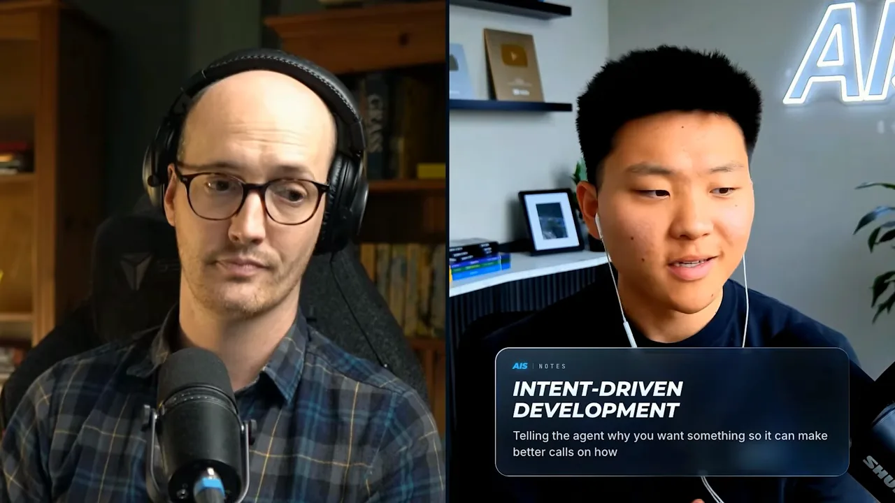
Matt는 비개발자와 개발자 사이에 차이가 없다고 답해요. 진행자가 말한 고민은 개발자에게도 똑같이 익숙한 일이라는 거예요. 그는 The Pragmatic Programmer의 한 구절을 꺼내요.
No one knows exactly what they want.
아무도 자기가 원하는 걸 정확히 알지 못해요.
— 영상 16:01
보통 사람이 개발자에게 일을 맡길 때도, 사람이 에이전트에게 맡길 때도 같은 장벽이 있어요. 듣는 쪽은 상대가 무엇을 신경 쓰는지 알아내려고 애써야 해요.
grill-me: 에이전트가 나를 인터뷰하게 하기
그래서 Matt의 스킬 중 가장 많이 쓰이는 하나가 grill-me예요. 에이전트가 내가 만들려는 것에 대해 나를 집요하게 인터뷰하게 하는 스킬이에요. 카드의 설명도 같아요. 코드를 쓰기 전에 먼저 묻는다는 점이 핵심이에요.
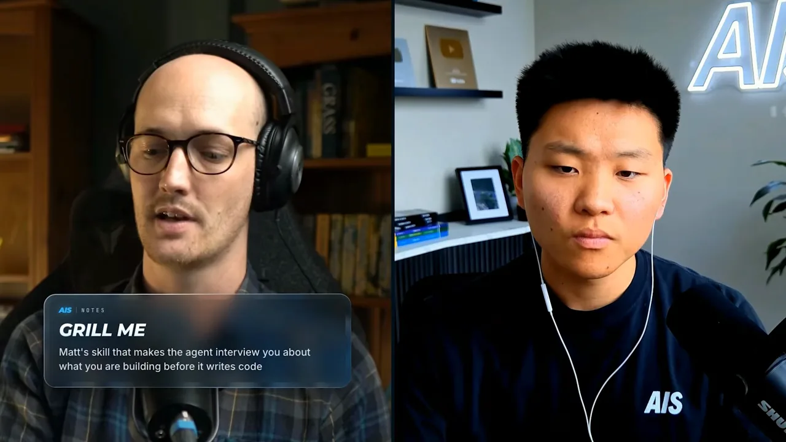
인터뷰를 하면 내가 무엇을 신경 쓰는지 에이전트가 더 많이 알게 돼요. 그리고 unknown unknowns가 드러나요. 내가 신경 써야 하는 줄도 몰랐던 것들이에요. 예고편 그래픽은 Matt가 든 예를 그대로 보여 줘요. 보안, 배포 방식, 그리고 아예 생각해 보지 못한 것들이에요.
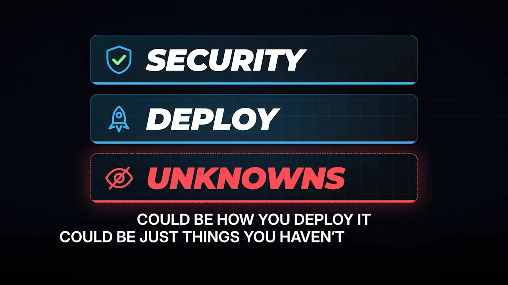
이걸 그냥 두면 에이전트는 빈칸을 지어내요. 아니면 '언급이 없었으니 중요하지 않다'고 넘겨요. 그러면 이상한 일이 생기거나, 상상한 것과 전혀 다른 결과가 나와요.
flowchart LR
A["머릿속 아이디어"] --> B{"에이전트가 먼저 인터뷰했나요?"}
B -- "예" --> C["보안·배포 같은 빈칸이 드러나요"] --> D["상상한 것에 가까운 결과"]
B -- "아니요" --> E["에이전트가 빈칸을 지어내거나 무시해요"] --> F["상상과 다른 결과"]
핵심 기술은 내가 놓친 게 있다는 걸 아는 것
진행자가 '머릿속에 있는 걸 다 꺼내는 게 기술이냐'고 묻자 Matt는 잠시 고민해요. 그리고 답을 고쳐요. 기술은 unknown unknowns를 의식하는 거예요. 내 설계에 빠진 게 있을 수 있다는 걸 알고, 완전한 설계를 만들었다고 믿지 않는 거예요.
생각을 코드로 옮기는 일은 원래 어려워요. 흐릿한 사람의 생각을 서로 맞물려야 하는 실행 문장으로 번역하는 일이라서, 코드에 이르러서야 설계의 약점이 보이기도 해요. 진행자도 자동화를 만들 때 엣지 케이스를 다 막았다고 생각했지만, 실제 운영에 들어가면 사람이 넣는 입력 때문에 예상 못 한 일이 생겼다고 덧붙여요.
돋보이는 사람은 소통을 잘하는 사람이에요
진행자가 짚는 문제는 '신뢰의 간극'이에요. 주말 동안 방에 틀어박혀 포트폴리오를 만들어 나오면 누구나 전문가처럼 보이는 시대예요. 그럼 20곳의 경쟁 업체 사이에서 고객은 누구를 고를까요?
고객은 내가 신경 쓰는 걸 이해하는 사람을 원해요
Matt는 경쟁 입찰을 해 본 적이 없어서 구체적인 조언은 어렵다고 먼저 말해요. 프리랜서 컨설팅을 할 때도 이미 큰 청중이 있었대요. 그래도 고객이 원하는 건 함께 일할 수 있고, 자기가 신경 쓰는 걸 이해하는 사람이라고 봐요. 소통의 간극을 건너려는 사람이에요.
여기서는 오히려 바이브 코딩이 좋다고 해요. 빨리 결과물에 닿는 게 목적이니까요. 고객의 사업을 이해하고 있다는 걸 시제품으로 빠르게 보여 주면 돼요. 하루 만에 끝낸 게 상대를 놀라게 한다면 5일 치를 청구하고 나흘은 쉬라는 농담도 해요. 진행자는 결국 신뢰를 만드는 건 '사람다움'이라고 정리해요. 내 사업을 지켜 줄 사람인지가 중요하다는 거예요.
최고의 개발자는 모두 소통을 잘했어요
학생들 중 누가 잘하느냐는 질문에 Matt는 소통을 잘하는 사람이라고 답해요. 개발자든 아니든 마찬가지래요. 그가 본 최상위 개발자는 코드를 바꾸면 무엇이 바뀌었는지 아주 자세하게, 읽기 쉽게 썼어요. 생각이 명확하면 그 명확함이 결과물에 그대로 남아요.
반대로 결과가 나쁜 사람은 에이전트에게 원하는 걸 전하지 못하고, 무엇이 잘못됐는지도 전하지 못해요. 명확한 용어와 경계로 생각하지 않기 때문이에요. 그래서 생각의 질과 언어의 질이 핵심이에요. 고객과 말할 때도, 고객이 원하는 걸 에이전트에게 전할 때도요.
유비쿼터스 언어: 같은 말을 같은 뜻으로
Matt는 여기서 도메인 주도 설계, 줄여서 DDD(Domain-Driven Design)를 꺼내요. 카드의 설명처럼 코드와 팀과 고객이 하나의 어휘를 공유하도록 소프트웨어를 만드는 방식이에요.
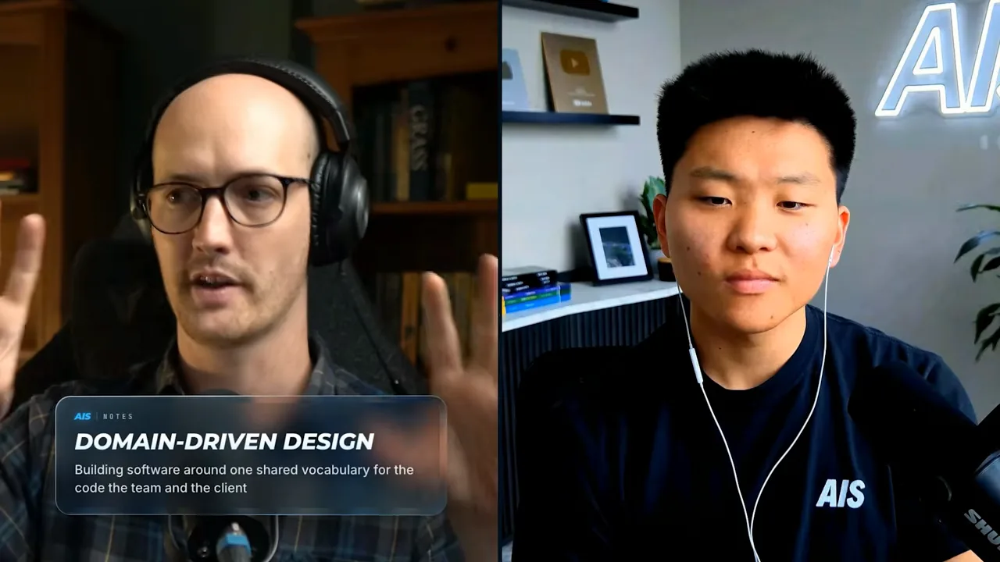
그 중심에 유비쿼터스 언어가 있어요. 코드에 쓰는 용어가 개발자끼리 제품을 말할 때 쓰는 용어와 같고, 고객이 요청할 때 쓰는 말, 사용자가 제품을 쓸 때 쓰는 말과도 같아야 해요. Matt가 든 예는 '주문'이에요.
'주문이 뭐냐'는 질문의 답이 코드에서도, 데이터베이스에서도, 화면에서도, 고객과 대화할 때도 같아야 해요. 이 언어를 다듬고 정확하게 만들수록 고객이 원하는 것과 내가 만드는 것이 맞춰진대요. Matt는 이 기법을 아무리 추천해도 모자라다고 해요. 그리고 grill-me를 고친 grill-with-docs가 인터뷰하면서 이 도메인 언어를 함께 만들어 준다고 소개해요.
진행자는 'JDD(질투 주도 개발)'라는 농담으로 받아요. Claude에게 '다른 모델은 이걸 훨씬 잘하는데 너는 왜 그래?'라고 말하는 방식이래요. Matt도 README 주도 개발, 행동 주도 개발처럼 무슨무슨 주도 개발은 어디에나 있다고 웃어요.
스펙 주도 개발이 실패한 이야기
진행자는 실패담을 하나 들려 달라고 해요. 어떤 일을 겪고 나서 '이건 스킬로 만들어 둬야겠다'고 생각했는지 궁금하다는 거예요. Matt는 스킬을 만들기 전의 이야기를 꺼내요.
'스펙이 새로운 코드'라는 주장
계기는 OpenAI의 Sean Grove가 AI Engineer 행사에서 한 발표였어요. 카드에 나오듯 발표 제목은 'The New Code'예요. 이제 코드를 쓸 필요 없이, 코드가 어때야 하는지 아주 자세한 명세서를 쓰면 된다는 주장이었어요. 명세서도 에이전트가 함께 써 주고, 에이전트가 그걸 코드로 바꿔요.
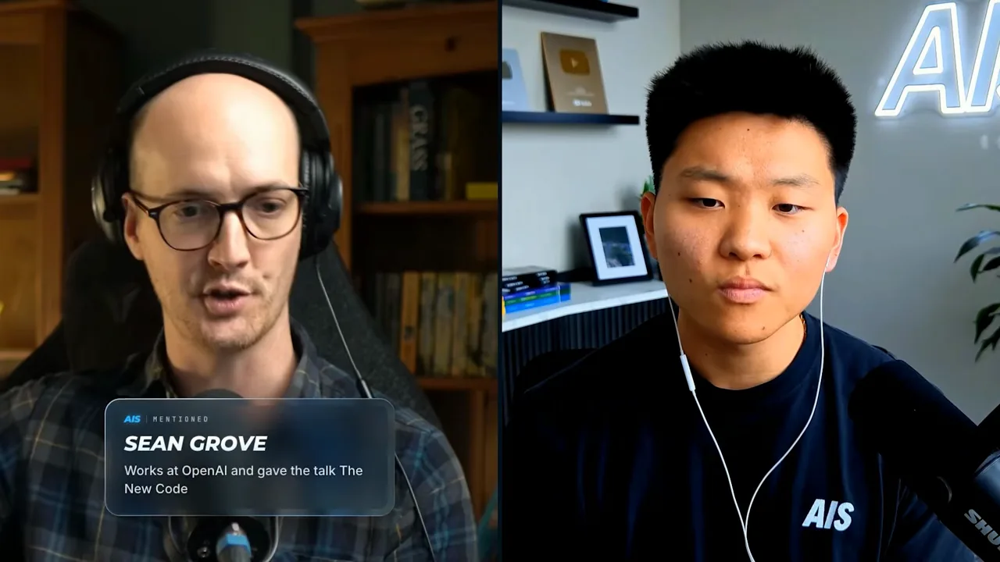
Matt는 이것을 스펙 주도 개발이라고 불러요. 뜻이 흐릿한 용어라 자기 정의를 붙여요. 스펙을 계속 남겨 두고, 진행하면서 스펙을 다듬는 방식이에요. 지금도 무척 인기 있고 이걸 바탕으로 한 프레임워크도 많대요.
몇 달 동안 해 봤지만 코드가 나빠졌어요
그는 아끼는 저장소로 시험했어요. Descript 같은 영상 편집기를 직접 만든 것으로, AI 글쓰기와 썸네일 디자인까지 거의 모든 일을 거기서 해요. 이걸 큰 스펙으로 바꿨어요. 아래 그래픽의 'PROJECT SPEC' 창이 그 모습이에요. Requirements에 'AI writing'과 'Thumbnails', Acceptance criteria에 'Export to MP4'가 적혀 있어요.
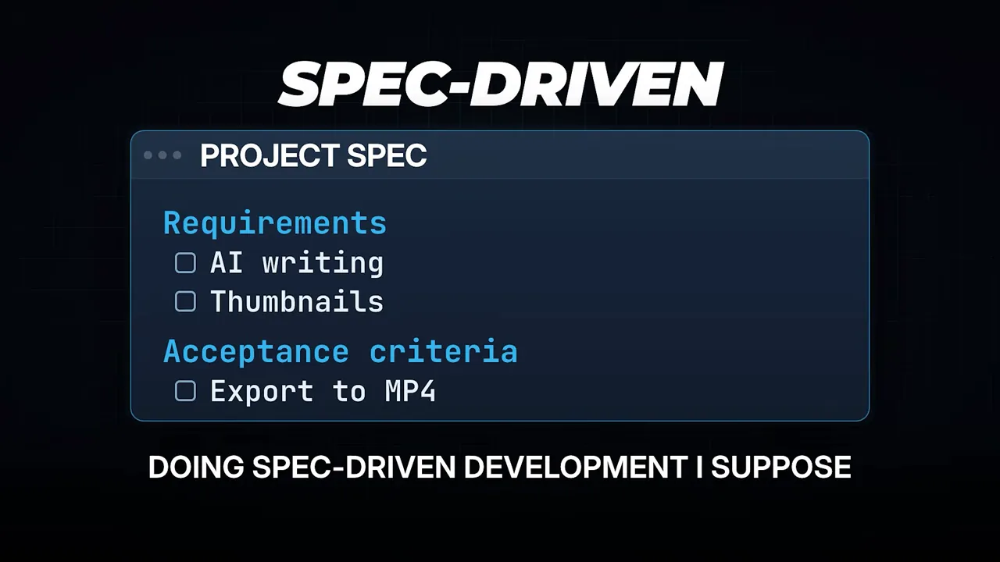
그런데 궁금해서 자꾸 코드를 들여다보게 됐고, 코드는 점점 나빠졌어요. 에이전트가 내는 결과도 함께 나빠졌어요. 다음 그래픽의 'AGENT RESULTS' 선이 처음엔 평평하다가 빨갛게 꺾여 내려가는 게 그 경험이에요.
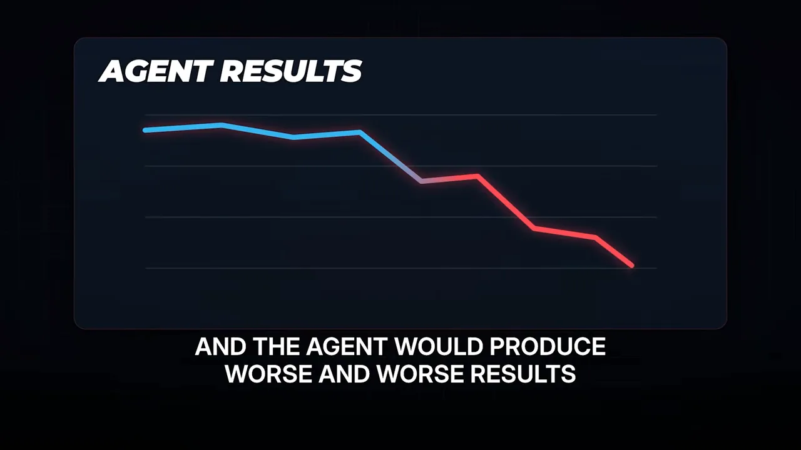
OpenAI 사람이 한 말이니 맞겠지 싶어 몇 달을 버텼대요. 그래도 안 됐어요. 결국 스펙을 버리고 코드에 다시 집중하기로 했어요.
Code is the environment that the agent operates in.
코드가 곧 에이전트가 일하는 환경이에요.
— 영상 28:11
불타는 집 한가운데 앉아 있는 개처럼, 나쁜 환경에 놓인 에이전트는 좋은 코드를 못 내요. Matt가 원한 건 말이 되는 좋은 코드였어요. 그가 정의하는 좋은 코드베이스는 바꾸기 쉬운 코드베이스예요. 한 군데를 바꿔도 에이전트가 생각 못 한 곳이 망가지지 않아요. 여기에 집중하자 비로소 일이 굴러가기 시작했대요.
| 스펙 주도 개발 (Matt가 해 본 방식) | 코드에 다시 집중 | |
|---|---|---|
| 사람이 챙기는 것 | 자세한 명세서와 그 수정 | 코드베이스가 바꾸기 쉬운 상태인지 |
| 코드 | 에이전트가 스펙에서 만들어 내는 결과물 | 에이전트가 일하는 환경 |
| Matt가 겪은 결과 | 몇 달 동안 코드와 결과가 함께 나빠졌어요 | 일이 풀리기 시작했어요 |
모델이 좋아져도 마음은 못 읽어요
진행자는 모델이 계속 좋아지는데 왜 이런 원칙을 스스로 지키지 못하느냐고 물어요. Matt의 답은 다시 소통의 장벽이에요. 모델은 내가 말하기 전에는 내가 무엇을 신경 쓰는지 몰라요. 스킬은 그걸 알려 주는 한 가지 방법이에요.
그는 하네스의 영향이 과소평가돼 있다고도 말해요. 카드의 설명처럼 Claude Code나 Codex처럼 모델에 도구와 기억을 둘러 준 앱이에요.
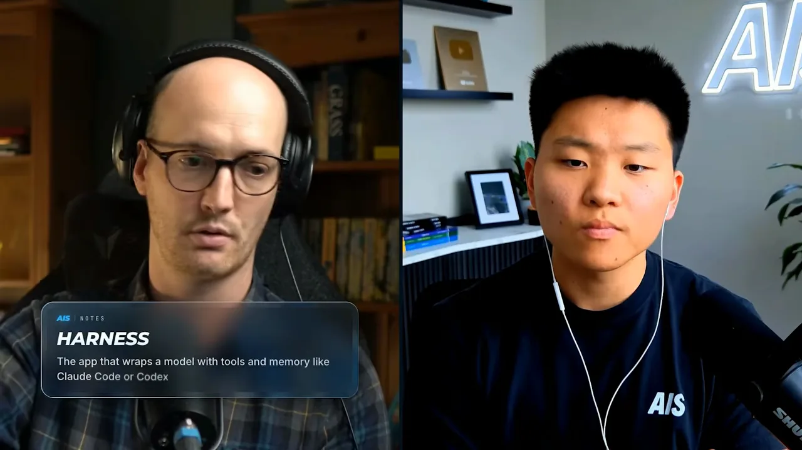
모델은 계속 좋아지겠지만 매번 나와 완벽하게 맞출 만큼 좋아지지는 않아요. 좋은 제품에는 뛰어난 개발자와 뛰어난 프로덕트 매니저가 둘 다 필요해요. 누군가는 결과를 보고 취향을 더해야 해요. 그래서 이 천재 개발자가 내 뜻을 알아듣게 돕는 프로세스는 늘 한 겹 필요하다고 봐요.
모델보다 환경: 에포트와 하네스
손으로 코딩하던 때보다 얼마나 빨라졌느냐는 질문에 Matt는 '비교가 안 된다'고 해요. 지금 에이전트 네 개가 서로 다른 프로젝트에서 일하고 있어요. 모두 장기 목표를 받고 '알아서 해 보라'는 지시를 받은 상태예요.
요즘 실험하는 건 chief of staff라는 스킬이에요. 서브에이전트를 관리하는 스킬로, 카드의 설명처럼 주 에이전트가 다른 에이전트에게 일을 나눠 맡겨 병렬로 돌려요. Matt는 이게 개발자 여덟 명쯤 되는 팀을 얻은 것 같다고 해요. 그는 중간중간 들러서 계획이 괜찮은지 보고 grill로 따져 물어요.
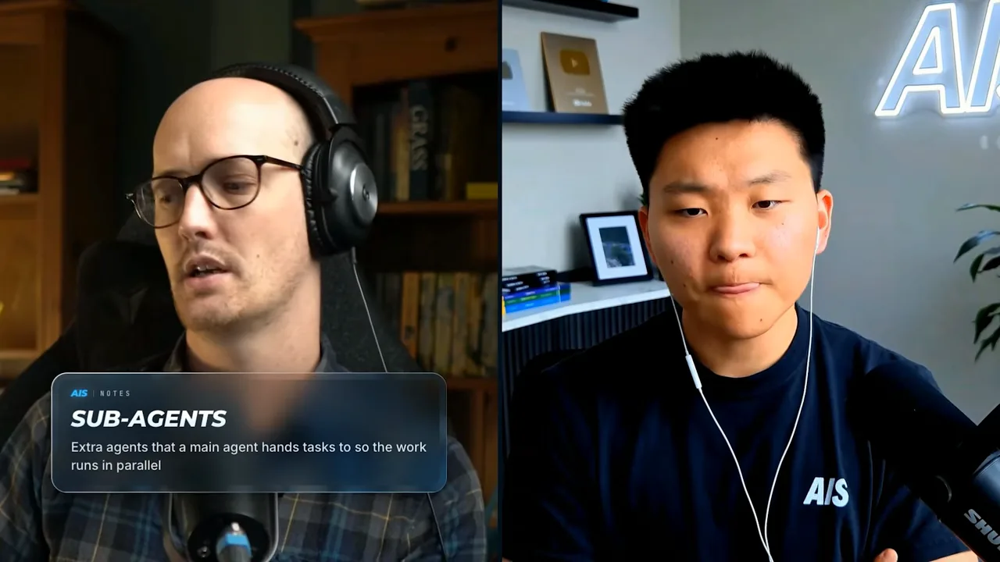
숫자로도 말해요. 예전에는 하루 커밋 20개면 좋은 날이었는데, 지금은 하루 200~300개쯤이래요. GitHub에서 직접 확인해 보라고 덧붙여요.
에포트는 낮게 써요
즐겨 쓰는 하네스와 모델은 Claude Code와 Opus 5.5예요. 여기서 Matt의 '핫테이크'가 나와요. 대부분의 사람이 에포트 레벨을 너무 높게 쓴다는 거예요. 카드의 설명처럼 모델이 답하기 전에 얼마나 오래 생각할지 정하는 설정이에요.
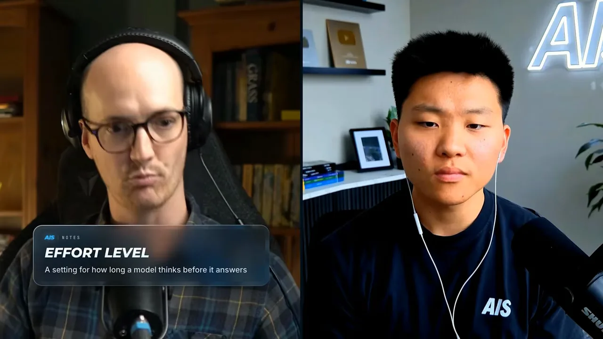
낮추면 토큰 효율이 훨씬 좋고 답도 빨라요. 그래도 괜찮은 이유는 앞에서 말한 바닥 올리기 덕분이에요. 에이전트는 테스트를 통과하는 코드를 쓰기만 하면 되고, 실수는 테스트가 잡아 줘요. 에이전트가 애쓸 필요가 없는 환경을 만들어 둔 거예요.
모델보다 환경이 더 큰 차이를 만들어요
Matt는 모델과 하네스를 이것저것 바꿔 보는 편이 아니래요. 둘 다 중요하지만 가장 큰 이득은 에이전트가 일하는 환경을 고친 데서 왔어요.
예로 든 건 자기 영상 편집기예요. 로컬에서 OBS(Open Broadcaster Software)가 돌아가야 하고 서드파티 의존성도 많아서, 에이전트가 브라우저로 직접 눌러 보게 만들기가 어려웠어요. 그걸 고치자 에이전트가 앱을 제대로 실행하고, 화면을 클릭해 보고, 스크린샷을 찍을 수 있게 됐어요. 에이전트가 볼 수 있는 데이터가 좋아지니 결과물 품질이 크게 올랐대요. 이 설정이면 Opus 4.5로도 비슷하게 좋은 결과가 나올 거라고 해요.
그는 에이전트를 회사 직원처럼 생각해요. 회사를 최대한 좋게 만들어 두면 직원의 기본 수준이 올라가요. 진행자도 동의해요. 새 모델의 벤치마크를 다 외우려 애쓸 필요가 없고, 오래된 모델을 쓰는 Matt가 소통할 줄 모르는 사람의 Opus 5.5보다 나은 결과를 낼 거라고 말해요.
신뢰 사다리로 시작하기
아직 겁이 나는 사람에게 마지막으로 해 줄 말을 묻자, Matt는 아주 구체적으로 답해요. 자기 스킬을 받고, 하네스는 아무거나 하나 고르면 된대요. Claude Code, Codex, GitHub Copilot 중 무엇이든 괜찮고, 하네스 고르는 데 시간을 너무 쓰지 말라고 해요.
브레이크부터 배우기
그다음은 Lauren Tan에게서 들은 '신뢰 사다리'예요. Matt는 최근 Grok Bot 쪽에서 일하는 Lauren Tan을 인터뷰했다고 해요. 처음 에이전트가 잘 돌아가는 걸 봐도 바로 믿지 않는 게 맞아요. 운전을 배울 때 가속 페달보다 브레이크를 먼저 배우는 것과 같아요. 계속 밟기만 하면 사용 한도를 다 태우고, 원하지 않은 결과가 나오고, 도구에 대한 감도 생기지 않아요.
편집자는 Matt가 말한 순서를 네 칸짜리 사다리로 정리했어요. 맨 아래 1번부터 올라가고, 오른쪽 세로 막대가 'TRUST', 곧 신뢰의 높이예요.
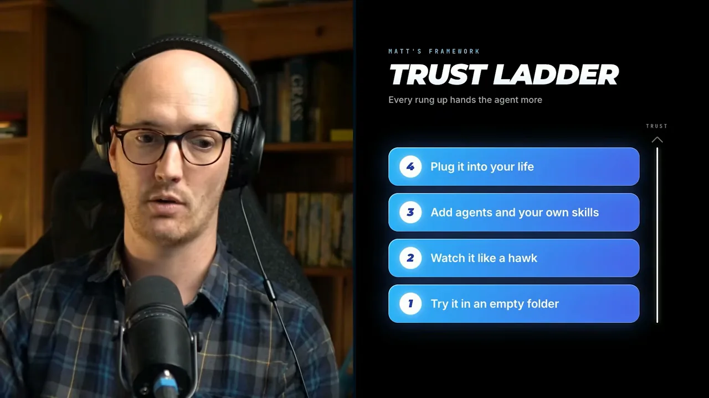
- 빈 폴더에서 써 봐요 — 모델을 열고 프롬프트를 몇 개 줘 봐요. 코드 안을 직접 볼 수 있게 Visual Studio Code도 함께 쓰면 좋대요. 만들고 싶은 게 있으면 동기가 생기고 배움의 피드백도 강해져요.
- 매처럼 지켜봐요 — 에이전트가 하는 일과 하네스가 주는 기능을 모두 이해해요. 언제 믿고 있는지, 언제 이해하고 있는지 감이 와요.
- 에이전트를 늘리고 내 스킬을 써요 — 에이전트 두 개를 돌리거나, 에이전트가 내 방식대로 일하게 스킬을 몇 개 써 봐요. 다른 데이터 소스에도 연결해요.
- 내 생활에 연결해요 — Slack, Twitter, Gmail에 붙여요. Matt는 시계에 말하면 할 일 목록에 들어가고 에이전트가 분류하는 흐름을 쓰고 있대요.
진행자는 이걸 아이에게 자전거를 가르치는 일에 비유해요. 처음부터 열 명을 한꺼번에 가르치지 않고, 가까이서 지켜보며 고쳐 줘요. 다 배운 뒤에도 고속도로에 내보내고 낮잠을 자지는 않는다고요.
야심 찬 일보다 지루한 일을 맡겨요
진행자는 Elon, Boris, Sam 같은 사람들이 '가장 야심 찬 과제를 맡겨 보라'고 말한다고 전해요. Matt는 정반대로 생각한대요.
| '가장 야심 찬 일을 맡겨라' | Matt: '지루한 일을 맡겨라' | |
|---|---|---|
| 무엇을 | 가장 큰 목표와 과제 | 하기 싫은 단순 반복 일, 요청에 대한 답장 초안 |
| 결과 확인 | 잘됐는지 재기 어려워요 | 결과를 재고 얼마나 좋은지 보기 쉬워요 |
| 틀렸을 때 | 되돌리기 어려워요 | 들어가서 고치면 돼요 |
아이디어를 짜고 실행 계획으로 바꾸는 브레인스토밍에도 쓸 수 있고, 그럴 때 grill-me가 유용하대요. 그래도 Matt가 AI에서 얻는 진짜 쓸모는 지루한 일의 자동화예요. 덕분에 전략적인 일에 집중할 수 있어요. 그는 글 콘텐츠의 첫 초안을 Sonnet 5.5에게 맡기고 자기가 고쳐 써요. 예전에는 사람을 고용할 만큼 싫어했던 일이 이제는 더 재미있어졌대요.
앞으로 기대하는 것
앞으로 2~3년 동안 무엇이 기대되느냐는 마지막 질문이에요. Matt는 먼저 선을 그어요. 자기는 예언가가 아니라 교사라는 거예요. 샌프란시스코가 아니라 영국 옥스퍼드셔에 살고, 미래를 귀띔해 주는 사람도 없대요. 신제품 미리 보기 제안도 대부분 거절해요. 지금 당장 되게 만드는 데만 관심이 있고, 그게 정신 건강에도 좋았대요.
소프트웨어 팩토리
지금 그가 기대하는 건 소프트웨어 팩토리예요. 카드의 설명처럼 에이전트가 스스로 일을 시작하고 코드베이스를 시간이 지나며 계속 개선하는 방식이에요.
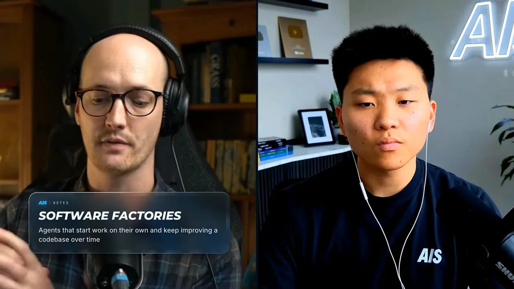
지금의 에이전트는 코드베이스를 길게 보고 생각하는 데 서툴러요. Matt는 에이전트를 팀에 꼭 한 명씩 있는 '귀찮은 개발자'로 만들고 싶어 해요. '빠른 길 말고 옳은 길로 하자, 우리 뒤에 올 사람을 위해서'라고 말하는 사람이에요. 지금은 에이전트가 이걸 정말 못하지만 방법이 있을 거라고 봐요.
에이전트 여럿을 조직하는 올바른 방법도 아직 아무도 찾지 못했다고 해요. 그가 본 어떤 방식도 '바로 이거다'라는 느낌을 주지 못했대요. 그만큼 잠재력이 크다는 뜻이에요.
오픈 모델
또 하나는 오픈 모델이 좋아지는 거예요. 언젠가 Opus 5.5만큼 좋은 오픈 모델이 나오면 아주 기쁠 거래요. 모델이 그보다 더 좋아질 필요는 없다고 해요. 부족한 부분은 자기가 메울 수 있으니까요. 그 이상으로는 토큰 효율이 좋고, 담백하게 말하고, 일을 빨리 끝내는 모델을 바라요.
Matt를 더 보고 싶다면 그가 운영하는 AI Hero 사이트(aihero.dev)의 뉴스레터, Twitter, YouTube를 찾으면 돼요.